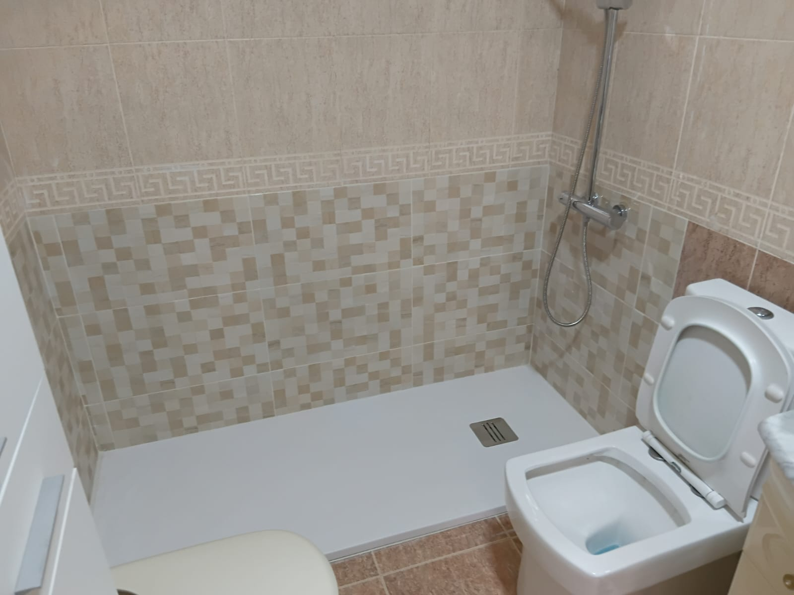

Cambiar Bañera por Plato de Ducha en Valencia: en 48h y sin romper el resto del baño
Gana espacio, confort y elimina barreras arquitectónicas de acceso. Ejecutamos el cambio de bañera a ducha en dos jornadas de trabajo, retirando la bañera antigua con desescombro ecológico y colocando plato antideslizante extraplano.

¿Por Qué Cambiar tu Bañera por Ducha? Beneficios Inmediatos
- Riesgo alto de resbalones y caídas al levantar la pierna para entrar.
- Inaccesible para personas mayores o personas con movilidad reducida.
- Consumo excesivo de agua si se llena la bañera.
- Dificultad de limpieza en los rincones y juntas de silicona viejas.
- Ocupa entre 1,5 y 2 metros cuadrados útiles en el cuarto de baño.
- Entrada a ras de suelo o escalón mínimo de sólo 3 cm.
- Tratamiento antideslizante Grado 3 (el máximo homologado según CTE).
- Textura pizarra natural agradable al tacto y cálida.
- Revestimiento con Gel Coat antibacteriano fácil de desinfectar.
- Mayor sensación de amplitud luminosa en todo el baño.
¿Cómo Trabajamos la Sustitución en 48 Horas?
Demolición, Saneamiento de Desagüe y Solera
Retiramos la bañera de chapa o hierro fundido sin tocar ni dañar el resto del azulejo de las paredes adyacentes. Comprobamos la pendiente hacia el bote sifónico para que el agua desaloje a máxima velocidad. Adaptamos las tomas de agua a la nueva altura de ducha (a 1,10 m de cota) e impermeabilizamos el hueco.
Colocación del Plato, Revestimiento y Mampara
Asentamos el plato sobre cama de mortero autonivelante. Alicatamos el zócalo o faja que ocupaba la bañera con azulejo porcelánico a juego o de contraste decorativo (tipo metro, imitación madera o pizarra). Sellamos perimetralmente con silicona fungicida transparente de secado rápido e instalamos la mampara de cristal templado.
Precios Todo Incluido en Valencia
| Configuración | Qué incluye | Coste Total |
|---|---|---|
| Básica Esencial | Retirada bañera + plato resina blanco hasta 120cm + alicatado zona afectada | 550€ - 850€ |
| Confort Completo | Plato pizarra hasta 160cm + grifería monomando termostática + mampara fija 8mm | 750€ - 1.150€ |
¿Quieres cambiar tu bañera esta misma semana?
Envíanos una foto de tu bañera actual al 722 851 328 por WhatsApp y te damos presupuesto exacto con fotos de platos y mamparas disponibles.